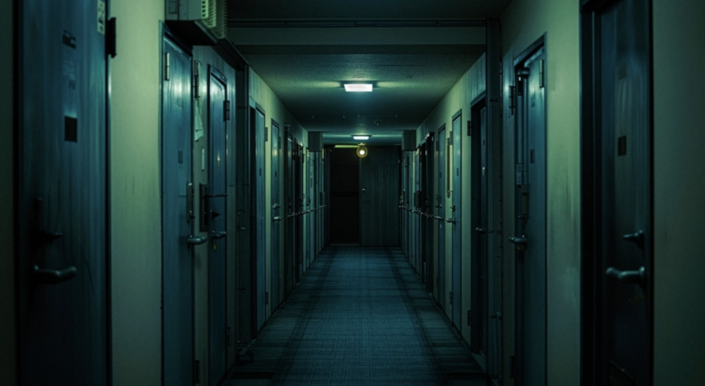

Apartment lighting mood
Existing architecture and fittings, revised toward cold institutional fluorescent lighting. Changes and settings · Play Mode checks · Transform comparison
Reference

User-supplied reference: cyan-green fluorescent light, oppressive ceiling, readable architecture and darker recesses.
Corridor
 Before: warmer plaster and neutral light.
Before: warmer plaster and neutral light. After: cool light on walls/floor, subdued fixture emission and dark door recesses.
After: cool light on walls/floor, subdued fixture emission and dark door recesses.
Lobby
 Lobby before.
Lobby before. Lobby after. Existing office light remains warmer through the window.
Lobby after. Existing office light remains warmer through the window.
Sixth floor
 Top corridor before.
Top corridor before. Top corridor after, with matching obscured glass and physical signage retained.
Top corridor after, with matching obscured glass and physical signage retained.
Elevator approach
 Elevator approach before.
Elevator approach before. Cool public hall and existing olive cabin. Red indicator and functional elevator retained.
Cool public hall and existing olive cabin. Red indicator and functional elevator retained.
Management-room contrast
 Reception window before.
Reception window before. Reception window after: the caretaker's warm desk lamp contrasts with the colder shared space.
Reception window after: the caretaker's warm desk lamp contrasts with the colder shared space.